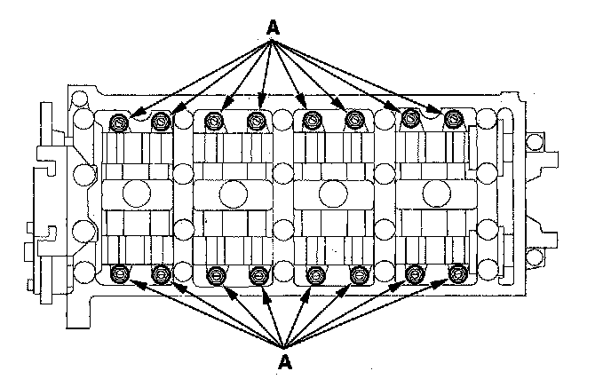
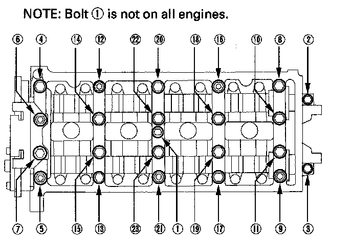
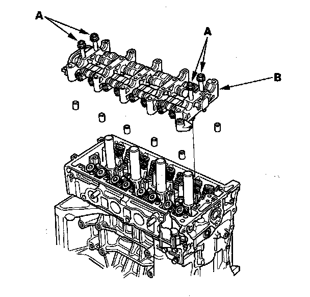

Rocker Arm Assembly Removal
Rocker Arm Assembly Removal1. Remove the cam chain.
2. Loosen the rocker arm adjusting screws (A).

3. Remove the camshaft holder bolts. To prevent damaging the camshafts, unscrew the bolts, in sequence, two turns at a time.
NOTE: Bolt (1) is not on all engines.

4. Remove the cam chain guide B, camshaft holders, and camshafts.
5. Insert the bolts (A) into the rocker shaft holder, then remove the rocker arm assembly (B).
